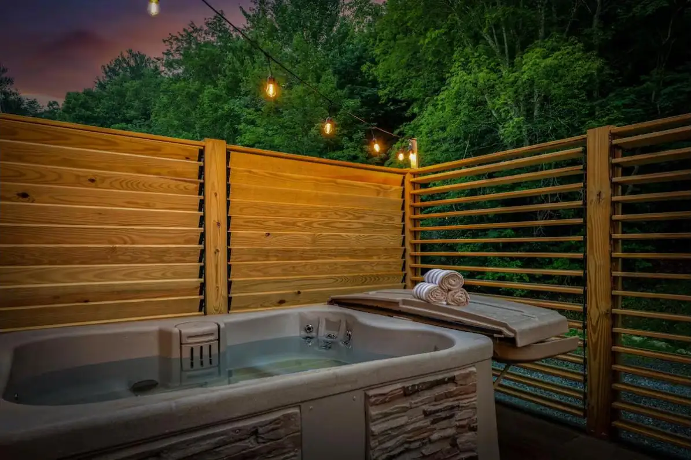
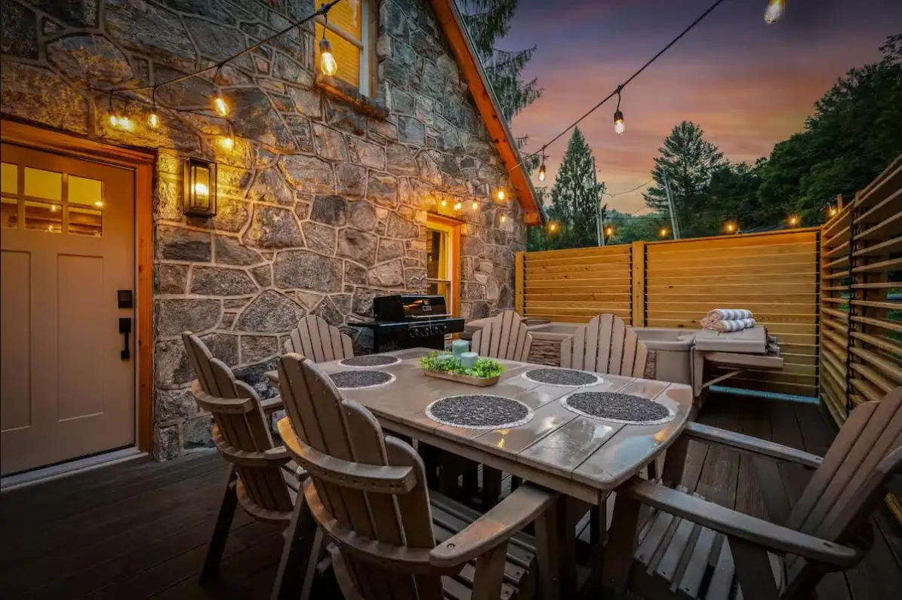

Why louvers beat a solid wall
A solid fence turns your deck into a box — dark, windless, and somehow still not private from the uphill neighbor. Louvers are smarter: angle the slats and sightlines close from the directions that matter while breeze and light keep moving. The space stays open; the audience disappears.


Designed for your deck, not from a kit
Every enclosure we build is custom: sized to your deck, angled for your actual sightlines, and finished to match the house. Around hot tubs we design for the soak — privacy at seated height, stars overhead, towel hooks where you want them.
- Louvered privacy walls for decks and patios
- Hot tub surrounds designed at soaking height
- Screening for equipment, trash areas, and outdoor showers
- Stained, sealed, or painted to match your home
- Built on structure engineered for mountain wind
Part of the whole outdoor space
Privacy walls usually arrive alongside the rest of the outdoor project — a new deck, a hot tub install, a fire-pit area. One crew designs and builds it as one space, the way we do at our own rental properties.